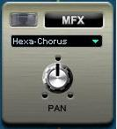
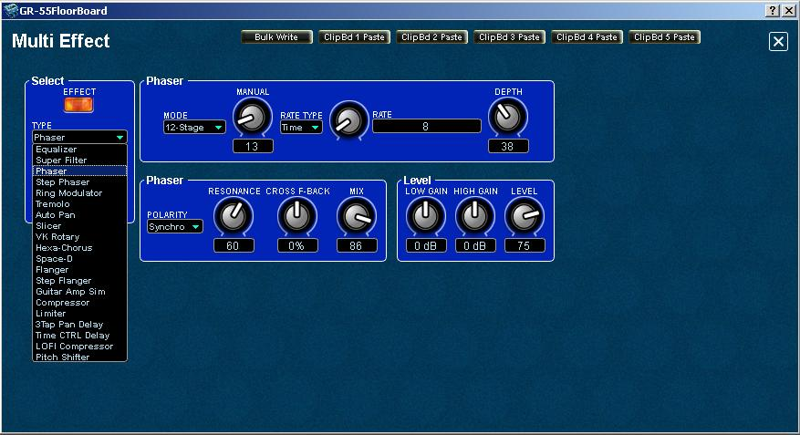
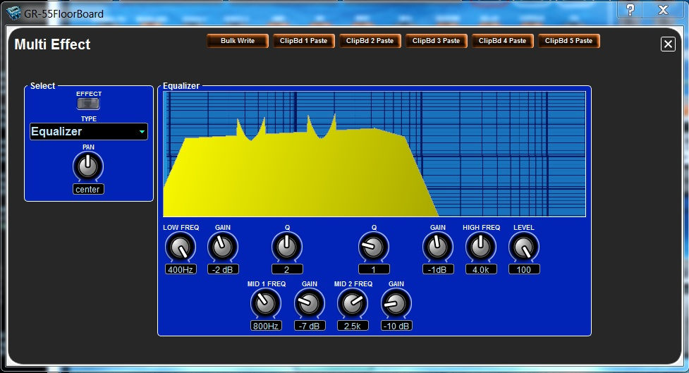

GR-55
FloorBoard Editor
Help
IndexMFX -
Multi Effect Editing
The
Multi Effects module can be enabled/disabled, a different effect
selected and panned from the main panel in the GR-55 FloorBoard Editor
using its mini panel's ON/OFF switch, drop-down effects menu and PAN
knob. One of twenty effect types can be selected.

To
make detailed changes to the settings, click on the mini panel to open
the editor's Multi Effects edit panel, which looks like the following
image:

NOTE:
Each effect has its own unique set of parameters with a unique set of
knobs
and parameter fields to configure it with a different appearance.
Therefore, if you change from one to another effect TYPE, the
knobs and sub-panels will change to support the selected effect's
parameters.
The number of possible combinations make it almost impossible to
explain every parameter's capabilities in the online help. The Phaser
effect is shown above and the MFX-EQ effect is shown beow, as examples.
See the
owner's manual for more detailed information.

The GR-55
effects parameters are equivalent to those of many Roland or other stomp
boxes, amps and rack mount effects. If you need to know how to adjust parameters for a given effect
TYPE, see the owners manual or try one of these websites to see how
your effects work or how your favorite players use their effects:
If
you want to sound like a player on one of these lists, try to setup
your GR-55 effects similar to their rigs.
Bulk Write the Current Setting to a Range of Patches
You can use the editor's Bulk Patch Modifier feature to write the
current setting as seen on the open panel to a selectable
range of patches or to all patches if you wish to use the settings globally.
WARNING!!: Existing Patch data will be overwritten.
- Click the Bulk Write button to open the Bulk Patch Modifier.
- Select the starting and the finishing user patch numbers.
- Clcik Start to save the current settings to the selected patches, or click Cancel if you decide otherwise.